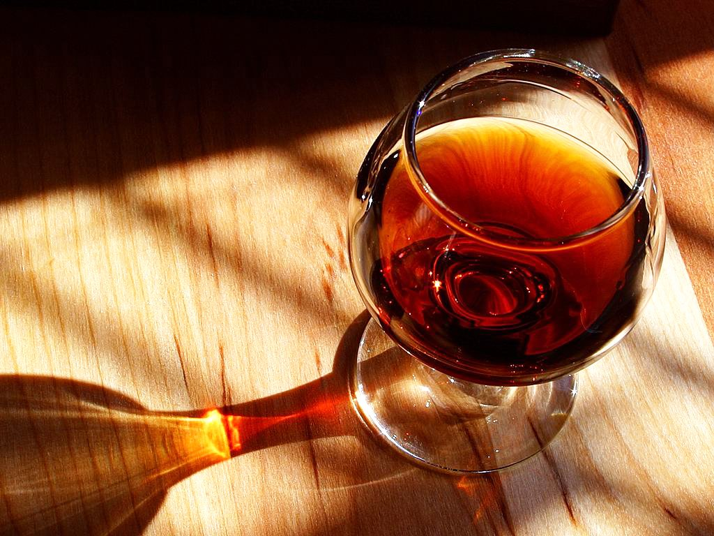

Ancora página 1
Vinho
A história do vinho tem grande importância histórica, pois o seu surgimento em tempos remotos tornou-o um produto que acompanhou grande parte da evolução ecônomica e sociocultural de várias civilizações ocidentais e orientais.
O vinho possui uma longínqua importância histórica e religiosa e remonta diversos períodos da humanidade. Cada cultura conta seu surgimento de uma forma diferente. Os cristãos, embasados no Antigo Testamento, acreditam que foi Noé quem plantou um vinhedo e com ele produziu o primeiro vinho do mundo ("E começou Noé a cultivar a terra e plantou uma vinha." Gênesis, capítulo 9, versículo 20). Já os gregos consideraram a bebida uma dádiva dos deuses. Hititas, babilônicas, sumérias, as histórias foram adaptadas de acordo com a tradição e crença do povo sob perspectiva.
Do ponto de vista histórico, sua origem precisa é impossível, pois o vinho nasceu antes da escrita. Os enólogos dizem que a bebida surgiu por acaso, talvez por um punhado de uvas amassadas esquecidas num recipiente, que sofreram posteriormente os efeitos da fermentação. Mas o cultivo das videiras para a produção do vinho só foi possível quando os nômades se tornaram sedentários. Existem referências que indicam a Geórgia como o local onde provavelmente se produziu vinho pela primeira vez, sendo que foram encontradas neste local graínhas datadas entre 8000 a.c. e 5000 a.c.
